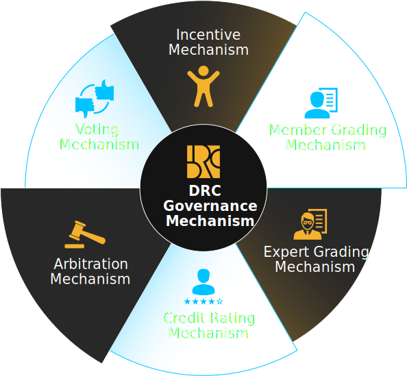
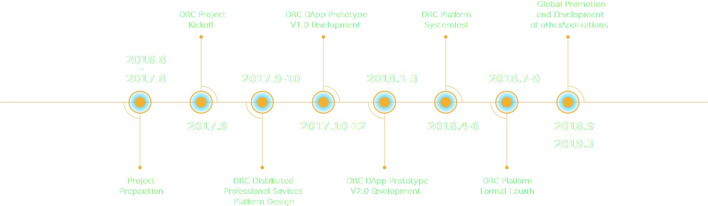

DRC Platform
Distributed Regtech Collaboration Platform (DRC) is a distributed professional service platform that aims to leverage
FinTech to establish a mutual trust mechanism among investors, innovative technology projects e.g. blockchain projects,
regulators, and third-party professional agencies. Utilizing wisdom from its community members, it will enable
a self-disciplined, self-governed, transparent, and open blockchain ecosystem, and promote the steady, regular,
and sound development of the blockchain sector.
DRC, which is “Autonomous”, “Distributed” and “Shared” in spirit, will dedicate itself to building an ecosystem with
manageable risks and transparent regulation.
Due Diligence Tool
The DD due diligence tool is one of the excellent applications on the DRC platform. The DD due diligence tool will
propose an in-depth due diligence based on the project’s team, plan, technical specifics and project management.
All the data originates from public business plans , legally public information, official websites , community
and BBS channels. DRC structuralizes all distributed data, extracts potential risks in the form of structured information,
and uses a professional risk assessment model to objectively evaluate the risk level of each blockchain project
under such process.

Share Globalized Professional Services
The globalized DRC distributed professional service platform shares professional services and resources from different
regions and fields on an open, shared, and self-governed platform. A global multi-party social system is thus created,
regardless of organizational or national boundaries. Different roles in this community, with their different social
contributions, will receive DRC tokens as rewards, and each member within the DRC community can undertake one or
multiple roles.
Governance Mechanism Of The Ecosystem
The construction of a healthy environment in the DRC ecosystem is based upon it’s Supporting Governance Mechanism.
An orderly, fair and collaborative ecosystem environment was created to enable future healthy development through
the establishment of an Incentive Mechanism, V oting System, Dispute Arbitration Mechanism, Expert Evaluation,
and Credit Rating Mechanism between the service user and supplier.
The DRC platform is a professional service chain built on Ethereum. It uses the blockchain data structure to validate
and store the data. The distributed node consensus algorithm is used to generate and update the data. It uses a
cryptographic way to ensure the security of data transmission and access. DRC provides a brand new distributed
infrastructure and community paradigm by employing a smart contract based on automated script code.

Professional Services For The Investment & Financing
Take investment and financing as an example, DRC as a smart investment and financing advisory, will provide a series
of professional services before, during and after the investment. Such services will greatly reduce the cost, improve
efficiency and actively control risks.
Competitiveness

Professionality
The core team of DRC project are from leading international consulting firms as well as famous technology companies,
including experts and experienced professionals on blockchain development, big data and algorithms from Tsinghua
University, Tongji University and other institutions.
Innovation
DRC project is the first professional blockchain application and service provider in the world. DRC uses Big Data,
Algorithm models, Blockchain Technology and Natural Language Processing to perform Due Diligence, Project Rating,
Risk Monitoring, Information Disclosure and Automatic Auditing.
Revolution
DRC project is an ambitious attempt in distributed and self-help business services . It provides an entirely novel
service model disrupting the traditional centralized and authoritative professional agencies. DRC offers an opportunity
to every innovative science and technology firm to use a professional and convenient risk management service.
Roadmap

Team
DRC Core Team Members
-
Selina LinChairman of DRC Foundation,CEO of the Executive Committee, DRCWith two decades of working experience in the financial sector, Ms. Lin has specialized in risk control for 10 years. She once served as a partner of EY in Financial Transformation & Innovation, and then as head of Credit & Risk Solutions in IBM. Advocating a concept of “RegTech”, she is dedicated to promoting “Proactive, Procedural, and Functional Supervision” in the technical innovation field.
-
Joyce ZhangDirector of Business Application & Management Center, DRCDr. Zhang has ten years of working experiences in Financial Risk Management Consulting. With a doctoral degree from the Chinese Academy of Sciences, she worked as an Associate Director in Deloitte, and once worked in Algorithmics and IBM. As an expert in Risk Quantification, she is versed in Financial Market & Credit Businesses, Financial Product Valuation, Risk Management Model, Investment Portfolio Management, and etc.
-
David LaiDirector of Financial Management Center, Director of Administration Management Center, DRCFormerly an Executive Director in Sitong Boyun Software Technology Co,. Ltd., he is a seasoned technical founder, operator, and manager.With rich experience in corporate management and project operation, he successfully completed financial management projects for administrative authorities for industry and commerce in eight provinces of China, e.g. Liaoning, Hunan, Guizhou.
-
 Jim ZhangDirector of Technology Development Management CenterA graduate from the School of Software, Tsinghua University, he has 11 years of working experience in the computer software industry. Formerly serving in IBM and Symantec, he is seasoned in development, test, and operation & maintenance, and versed in multiple programing languages (C++/C, Java, C#, Linux Shell, and R) and software development.
Jim ZhangDirector of Technology Development Management CenterA graduate from the School of Software, Tsinghua University, he has 11 years of working experience in the computer software industry. Formerly serving in IBM and Symantec, he is seasoned in development, test, and operation & maintenance, and versed in multiple programing languages (C++/C, Java, C#, Linux Shell, and R) and software development. -
Peter BianDRC Product Manager, Director Of DRC Community OperationWith eight years of working experience working in internet product design and project management, he served as Product Director in Bike Wutong Innovation Incubator and was in charge of product logic, prototype pattern, PRD copywriting, as well as product launch and product upgrading.
-
David CaoBlockchain ExpertDavid Cao has extensive experience, having worked at the IBM Toronto Lab and then having joined the development of the blockchain project Hyperledger Community, responsible for developing the Ethereum cross-border payment project.
-
 Brain BianAI ExpertHolding patents for over 10 inventions, he has made achievements in Multi-Interface Human-Computer Interaction and Artificial Intelligence. He developed China’s first browser capable of speech recognition, and is an early Contributor to DRC community.
Brain BianAI ExpertHolding patents for over 10 inventions, he has made achievements in Multi-Interface Human-Computer Interaction and Artificial Intelligence. He developed China’s first browser capable of speech recognition, and is an early Contributor to DRC community. -
Kuan ZhangCyber Security ExpertReceiving a Doctor’s degree from the Department of Electrical & Computer Engineering, University of Waterloo, Canada. He is committed to research on Cyber Security, Privacy Protection, Big Data, Intelligent Healthcare, Social Network, and IOT.
DRC Advisors
-
Ju XieExpert AdvisorCouncil Member of BitShares, early participant in mainstream public blockchain projects, Founder of GDEX Exchange
-
Leo WangExpert AdvisorFounding Partner of PreAngel Fund
-
 Hua ZhangExpert AdvisorInvestor for the trading platform Lbank.info, Co-Founder of DAEX
Hua ZhangExpert AdvisorInvestor for the trading platform Lbank.info, Co-Founder of DAEX -
 Jimmy XiongExpert AdvisorHead of IOTA China Community Member, dedicated to studying and investing in innovative blockchain projects.
Jimmy XiongExpert AdvisorHead of IOTA China Community Member, dedicated to studying and investing in innovative blockchain projects. -
Henry YuExpert AdvisorFounding Partners of L & Y Law Office, HK.
-
 Max JackowskiExpert AdvisorLegal Manager at L & Y Law Office, HK.
Max JackowskiExpert AdvisorLegal Manager at L & Y Law Office, HK.
DRC动态
>> DRC活动
-
 曾任安永金融服务转型与创新团队合伙人、IBM风险与监管合规解决方案负责人的林扬，她专注于金融机构的风险管控与监管合规领域。2017-11-19
曾任安永金融服务转型与创新团队合伙人、IBM风险与监管合规解决方案负责人的林扬，她专注于金融机构的风险管控与监管合规领域。2017-11-19 -
 DRC平台联合万向区块链新链加速器成立分布式专家行研研究院，以分布式众包的方式定期开展专题研究深度分析区块链行业痛点。2017-11-19
DRC平台联合万向区块链新链加速器成立分布式专家行研研究院，以分布式众包的方式定期开展专题研究深度分析区块链行业痛点。2017-11-19 -
 DRC平台创始人林扬在上海第三届区块链全球峰会发表主题演讲《DRC，值得信赖的智能监管科技平台》，第一次公开发布DRC监管科技平台。2017-11-19
DRC平台创始人林扬在上海第三届区块链全球峰会发表主题演讲《DRC，值得信赖的智能监管科技平台》，第一次公开发布DRC监管科技平台。2017-11-19